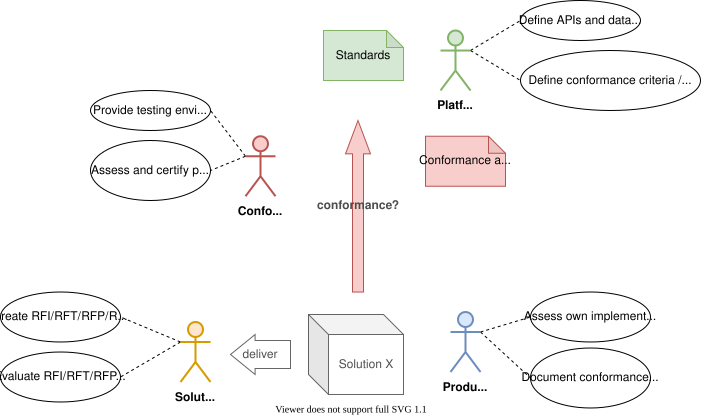
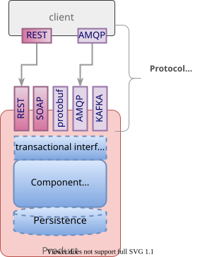
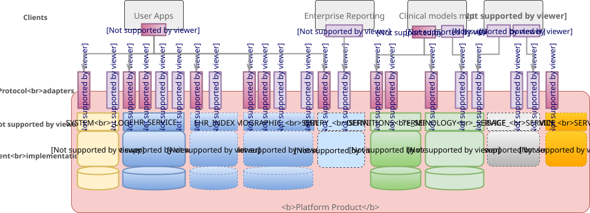

Overview
Goals
Conformance testing is used as the basis of product and system certification, and has the following goals:
-
Tendering: enable tendering authorities to state formal criteria for compliance in tenders
-
Protection for solution developers: enables bona fide vendors and other developers to prove the quality of their solutions compared to other offerings claiming conformance
-
Protection for procurement: provides a way of ensuring that purchased solutions can be contractually guaranteed to perform in certain ways
Stakeholders
These needs imply four kinds of stakeholder and associated interests:
-
Platform Specifier(s) - openEHR International and others (e.g. SNOMED International) publish open specifications used by solution builders as well as conformance criteria and testing framework for assessment purposes;
-
Organisations procuring solutions based on the platform specifications;
-
Solution Builders - including product vendors, in-house, etc, whose solutions are claimed to be based on the specifications;
-
Conformance Assessment Agency/ies - independent assessors of conformance of concrete systems or products to the conformance criteria published by the platform specifier(s).

The confidence of procuring organisations in the overall platform solutions market relies on the availablility of formal conformance criteria, as well as guides and materials for concretely performing conformance assessment. Assessment may be performed in-house on both procurement and vendor side, but in a more mature market will also be performed independently by dedicated assessment organisation(s).
Product Scope
There are assumed to be three categories of testable artefact for the purposes of Conformance testing:
-
API-exposing (Platform) Components - components exposing a service API, including:
-
information-related platform components, such as Clinical Data Repository, Demographic repository;
-
reference data / knowledge-related components, e.g. Terminology Service, clinical model repository;
-
other services, e.g. Clinical Decision Support;
-
-
API-using Components (Platform clients) - components using a service API, including any application, tool or system that accesses APIs of a particular platform component;
-
Tools - standalone applications usually designed to perform a specific task, e.g. building of a certain type of model.
Conformance for these categories is assessed as follows.
| Category | What is being assessed | How assessed | Methodology |
|---|---|---|---|
Platform Component |
API conformance |
Conformance of the implemented APIs to the published APIs, in a concrete API technology |
Regression of test client running API call-in test cases against reference results |
Data Validation conformance |
Conformance of platform’s validation of data against semantic models (archetypes etc) |
Regression of test client committing variable data sets against reference validity |
|
Platform client |
API compatibility |
Conformance of the client’s ability to make calls into a published API, in a concrete API technology |
Simulated service testing; functional testing against reference platform implementation |
Tool |
Artefact representation |
Conformance of artefacts created / modified by the tool to the artefact specifications |
Functional round-trip testing. |
This guide primarily addresses the first category (platform implementations), but can be adapted to conformance assessment of platform clients (i.e. applications).
Non-functional conformance (performance, etc) is not addressed by this guide.
What can be Concretely Tested?
Although conformance criteria and tests can be specified in abstract ways, only real systems and applications can be tested, and the concrete conformance assessable is between such deployed artefacts and the technology-specific specifications on which they are based. Abstract semantics, including of call logic and data types, are only testable because they are expressed within the relevant technology-specific specifications, e.g. the REST API for the openEHR EHR service.
A specific deployed system to be tested is known as the system under test (SUT).
Platform Implementations
For the first product category, the SUT has a platform architecture, consisting of one or more components that each expose an API in one or more specific API technologies whose component semantics and API are described by the combination of the openEHR Platform Abstract Service Model and the relevant technology specification (e.g. REST API).
Any given API call exposed in a deployed component thus implements two types of semantics:
-
formal, transactional semantics defined by the service model;
-
API-specific semantics, that follow the rules of each API communication protocol, e.g. how to marshal arguments, handle errors etc.
A given component implementation (say, EHR Service) might expose more than one concrete API, e.g. REST and Apache Kafka, each of which represents a particular communication protocol for accessing the component. Such protocols include the text-based, such as SOAP/WSDL and REST, as well as various binary protocols, including Google Protocol Buffers, Apache Thrift, Avro, Kafka, ZeroC ICE, and Advanced Message Queueing Protocol (AMPQ).
The transactional semantics remain the same regardless of API protocol, while the API-specific semantics vary. The result of the call via any protocol should be the same. This is often achieved via a native API in e.g. Java, C# etc, but need not be. The general component model is shown below.

To establish a common basis for naming and describing semantics of the openEHR Platform, the openEHR Platform Abstract Service Model is used. This defines a standard set of openEHR component names along with definitions of the transactional semantics of each component, i.e. the 'semantic' test target referred to above. (A product’s own component names need not correspond to the openEHR component names of course, but for the purpose of testing the logical mapping of the two should be provided by a developer.)
Each of the concrete protocol interfaces is defined by its own specification, for example the openEHR REST API specification, and may be regarded as a product component, for which conformance testing may be conducted. No assumption is made that any given product supports any particular protocol(s), although a minimal set of REST APIs on components such as the System Log is likely to be useful for testing purposes.
The following figure illustrates a notional openEHR platform product, consisting of components and various API interfaces as described above.

Platform Clients
TBD
What Conformance Claims are Possible?
Conformance of a specific (i.e. individual) deployed system or application, which may be a custom build or an installed vendor product can be directly determined by executing appropriate test resources (e.g. executable test runners) on the deployment.
Conformance of a product (platform, application) provided by a vendor to any particular specification is inferred from testing of a deployment of the product in such a way as to be representative of any deployment.